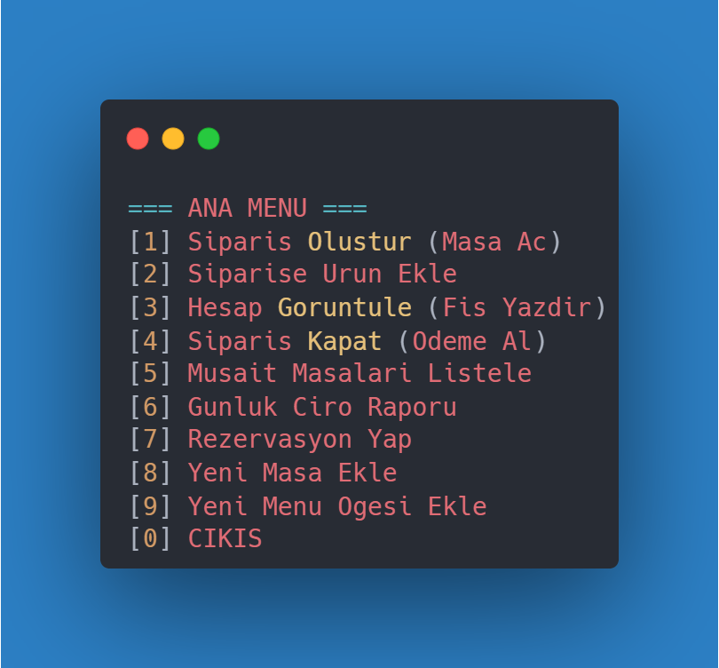
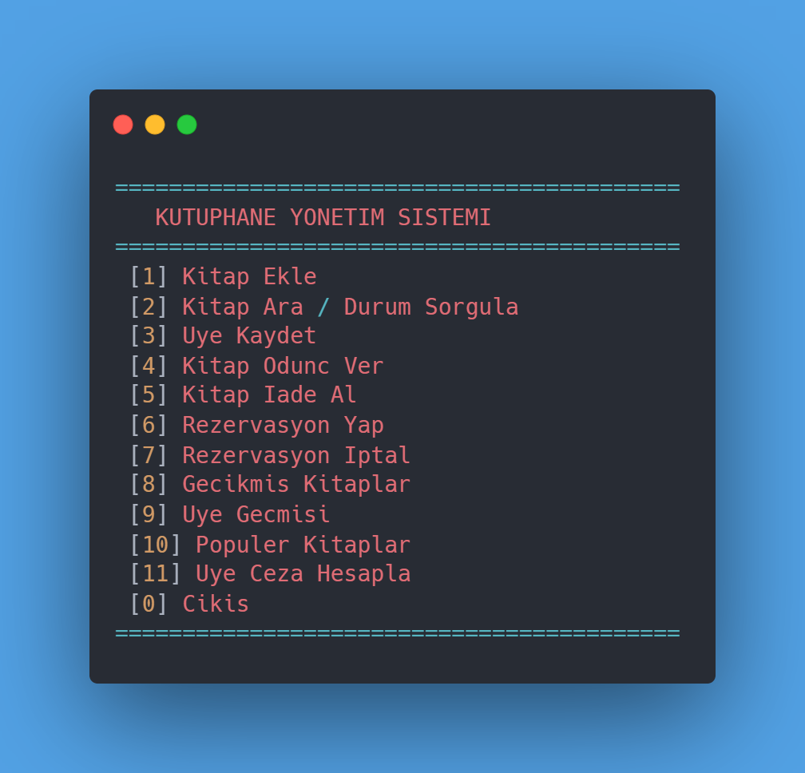
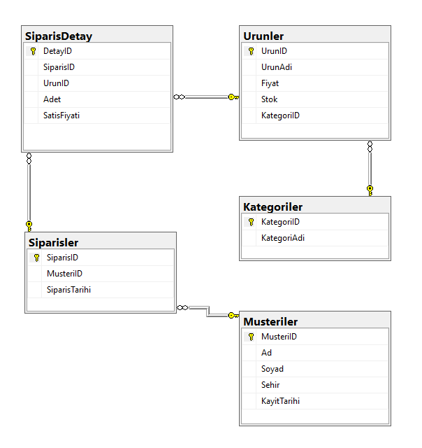

Veri bilimi algoritmaları ve Cosine Similarity kullanarak geliştirilmiş, kullanıcının izleme geçmişine dayalı kişiselleştirilmiş film öneri sistemi.

TinyML tabanlı taşınabilir akıllı gözlük ile gerçek zamanlı engel tespiti ve sesli rehberlik sağlayan donanım ve yazılım projesi.

C++ dilini ve Nesne Yönelimli Programlama (OOP) mantığını pekiştirmek amacıyla geliştirdiğim, terminal üzerinden çalışan bir simülasyon. Görsel bir arayüz yerine; sipariş alma, masa takibi ve hesap hesaplama gibi süreçlerin arka plandaki algoritmik akışına odaklandım. Bir İşletmenin veri yönetiminin kod tarafında nasıl işlediğini anlamamı sağlayan temel bir çalışma.

Veri ekleme, silme ve düzenleme (CRUD) işlemlerinin mantığını kavramak için geliştirdiğim, metin tabanlı bir kütüphane asistanı. Kitap kaydı, ödünç alma ve iade gibi süreçleri yöneten bu projede; verilerin hafızada nasıl tutulduğunu ve işlendiğini deneyimlemeye çalıştım. Grafiksel butonlar olmadan, saf kod mantığıyla çalışan bir yönetim sistemi denemesi.

Geniş çaplı bir E-Ticaret platformunun veritabanı mimarisinin oluşturulması ve SQL / Python kütüphaneleri ile satış verilerinin görselleştirilmesi.